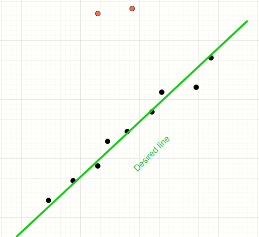

Nearest neighbour distance metric approach to determine the RANSAC threshold
What problem does the RANSAC algorithm solve?
Consider the data points below.
We have a mix of inliers (black) and outliers (red). We want to find the model of the straight line which fits the inliers.
The human mind can easily distinguish the inliers from the outliers and produce a line which neatly fits all the inliers.

RANSAC is a simple voting-based algorithm that iteratively samples the population of points and find the subset of those lines which appear to conform to a model. In this case, the model is a straight line.

Least squares method will encompass all points thereby producing a line which is away from the desired line

How does the RANSAC algorithm work?
This is not a detailed discussion on RANSAC.

Copyright information for this image can be found here
- Pick any N random points from the entire population
- Find the line using Least Squares which fits the N points
- Find all points which are inliers to this new line. Inliers are points which are within threshold distance 'd' of the line
- Repeat the above for a configured number of trials.
- The line which produces the highest inliers is the winnder
Detailed working of the RANSACA can be found in this Wikipedia article
and my article on Medium .
What problem are we attempting to address in this article?
What are we trying to solve?
The intuition behind NNE distance
What was the inspirtion for using NNE distance?
Show picture of NNE from previous article

How to calculate the the nearest neighbour distance?
Refer to my article on NNE
Show some snippet
Show picture from old article explaining what NNE distance is.
Results - When image contains a one line
Different images (SP,MAXD) vs THRESHOLD (factor * mean nne)
Results - When image contains two lines
Different images (SP,MAXD) vs THRESHOLD (factor * mean nne)
Accompanying source code
Show folder structure
explain the purpose of the Python files
Generating noisy images
explain which file, what to run